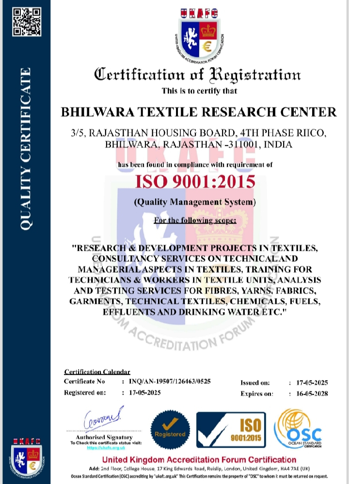

.png)
📞 +91 9829319800 | ✉ btrcbhilwara@gmail.com

Bhilwara Textile Research Center (BTRC) is a professional textile testing laboratory dedicated to quality assurance, research, and technical excellence in the textile industry. Since 2017, we have supported manufacturers with reliable testing solutions, precision analysis, and industry-compliant reporting.
Our state-of-the-art laboratory is equipped with advanced testing instruments and operated by experienced professionals. We help textile manufacturers improve product durability, safety, and performance through accurate and timely results.
Our mission is to deliver precision-driven textile testing and technical solutions that empower manufacturers to maintain superior quality standards. We combine modern laboratory technology with deep industry expertise to ensure reliable and transparent results.
Our vision is to become a nationally recognized center of excellence in textile testing and research. We aim to set benchmarks in quality assurance, innovation, and sustainable industrial practices within the textile sector.
Integrity, precision, innovation, and accountability form the foundation of our operations. We believe in building long-term partnerships based on trust, transparency, and consistent service excellence.
BTRC is trusted for accurate testing, advanced laboratory infrastructure, professional expertise, and timely reporting. Whether you are a small-scale manufacturer or a large enterprise, we are committed to providing dedicated support and dependable quality assurance services.